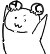

Po是一名来自天朝东北贫困山区的普通乡下孩子.和万千乡间的孩子一样.嬉戏在农家无忧无虑地长大.普通得不能再普通的孩子一个.自小没有传说中那可见神鬼的阴阳眼.也没有听闻万物的通闻耳.更没有小说中的特异体质.
Po是一名来自天朝东北贫困山区的普通乡下孩子.和万千乡间的孩子一样.嬉戏在农家无忧无虑地长大.普通得不能再普通的孩子一个.自小没有传说中那可见神鬼的阴阳眼.也没有听闻万物的通闻耳.更没有小说中的特异体质.对于Po这个年龄段的人来说.基本上是无信仰的人.Po不像奶奶一样信奉神佛.也不和三姑四婶一起信什么天主真主.在Po看来.就算耶和华与默罕默德加上释迦牟尼手拉着手来向Po传教.也远没有烤熟的羊肉有兴趣.
就是这样的Po.却认识了一位只流传在神怪故事中的良师益友.一位连Po都敬若神明的狐仙.它虽不曾改变Po的生活.却改变了Po的生活.
在这个串里.Po就慢慢的.和各位丧失讲一讲Po和这位狐仙大人的一桩桩一件件奇闻怪事.
冷清的怪谈版( ´_ゝ`)旦
然后慢慢地吃了下去.一只鸡腿吃完.她有些奇怪地问Po.怎么这只鸡还有味道?Po向她说明了烧鸡是怎么做的.听得她一愣.感觉有些滋味.又取过一只鸡腿来.吃了下去.
两只鸡腿吃罢.她也坐正了身形.轻咳一声.又摆出了一张严肃的脸正色说:虽然你这小孩子略有些奇妙.但你已见过本姑真身.今天怕是不能让你回去了!
Po心里咯噔一下.等等.这丫和剧本上不一样啊!不应该是对我抱以好感然后逐渐被食物诱引然后调教成功之后就可以做羞羞的事情了吗?这咋峰回路转要弄死我捏?介倒霉不?介不作吗?正在我瑟瑟发抖脑洞大开的时候.她又接着开口道:小后生.你有两条路.一是今天你有啥交待的都告诉我.念在两餐之缘上我帮你托梦告知.然后就送你上路.
Po一激灵.她正色说完.又媚笑着说:还有第二条路.看你乖巧机灵.你若愿意供奉于我.受我指使和庇护并不能说出我的来历.也可以.
干!.是个人就得选不用死的第二条啊.Po暗自后悔.这不是倒霉催的嘛.简直活受罪.答应了她的条件和要求.并被勒令明天再送一只烧鸡过来.接着有一搭没一搭的问话闲聊一阵.她遍又握着Po的手把Po送回了村子.
然后慢慢地吃了下去.一只鸡腿吃完.她有些奇怪地问Po.怎么这只鸡还有味道?Po向她说明了烧鸡是怎么做的.听得她一愣.感觉有些滋味.又取过一只鸡腿来.吃了下去.
两只鸡腿吃罢.她也坐正了身形.轻咳一声.又摆出了一张严肃的脸正色说:虽然你这小孩子略有些奇妙.但你已见过本姑真身.今天怕是不能让你回去了!
Po心里咯噔一下.等等.这丫和剧本上不一样啊!不应该是对我抱以好感然后逐渐被食物诱引然后调教成功之后就可以做羞羞的事情了吗?这咋峰回路转要弄死我捏?介倒霉不?介不作吗?正在我瑟瑟发抖脑洞大开的时候.她又接着开口道:小后生.你有两条路.一是今天你有啥交待的都告诉我.念在两餐之缘上我帮你托梦告知.然后就送你上路.
Po一激灵.她正色说完.又媚笑着说:还有第二条路.看你乖巧机灵.你若愿意供奉于我.受我指使和庇护并不能说出我的来历.也可以.
干!.是个人就得选不用死的第二条啊.Po暗自后悔.这不是倒霉催的嘛.简直活受罪.答应了她的条件和要求.并被勒令明天再送一只烧鸡过来.接着有一搭没一搭的问话闲聊一阵.她遍又握着Po的手把Po送回了村子.
回家之后Po也是心中忐忑难安.又没有办法去找人商量.私下里旁敲侧击地询问.换来的无非都是告诫不要招惹狐狸的劝语.老人家或者见多识广的博闻之人也常常说.狐狸如果成精.乃是地仙.不是正神.行事亦正亦邪.善恶难辨.
话说回来.担惊受怕不说.Po这一假期基本上是天天去见她.无论是偷是买.总是弄到新鲜鸡肉鸡蛋和羊肉之类.变着法儿调换着样子给她做吃的.貌似她也很满意.对待Po的态度是越来越好.不时还能言语间逗得她笑声不已.
经过了大半个月地相处.她对Po说她出生自锦北紫荆山.让我称呼她为紫姑姑.至于她活了多少年纪她也记不清.这有点超乎Po的想象和理解范围.不过好在这些工作也没有白做.紫姑传授给Po一套运气吐纳的方法.叫Po每天依法练习.
之后随着暑假的结束.Po高中学业渐忙.虽不能天天去见紫姑.但也是每周挤出时间必去见她.紫姑虽然在我看来正邪难分.但至少没有加害过Po.至于她教授给Po的吐纳之术.Po也在每天睡前腾出半个小时来照练.
渐渐地.Po发现自己的确有些异样.比如.虽然自小乡间长大身体强健.但坚持练习之后.身体似乎更加健硕.体育课的千米跑步越来越轻松.
话说回来.担惊受怕不说.Po这一假期基本上是天天去见她.无论是偷是买.总是弄到新鲜鸡肉鸡蛋和羊肉之类.变着法儿调换着样子给她做吃的.貌似她也很满意.对待Po的态度是越来越好.不时还能言语间逗得她笑声不已.
经过了大半个月地相处.她对Po说她出生自锦北紫荆山.让我称呼她为紫姑姑.至于她活了多少年纪她也记不清.这有点超乎Po的想象和理解范围.不过好在这些工作也没有白做.紫姑传授给Po一套运气吐纳的方法.叫Po每天依法练习.
之后随着暑假的结束.Po高中学业渐忙.虽不能天天去见紫姑.但也是每周挤出时间必去见她.紫姑虽然在我看来正邪难分.但至少没有加害过Po.至于她教授给Po的吐纳之术.Po也在每天睡前腾出半个小时来照练.
渐渐地.Po发现自己的确有些异样.比如.虽然自小乡间长大身体强健.但坚持练习之后.身体似乎更加健硕.体育课的千米跑步越来越轻松.
头脑也是越来越灵活.学习上思路简直是越来越清晰.由此一来.Po更是敬紫姑如神明一般.
转眼间到了秋收.Po家的地里收成丰厚.简直让家人乐开了花.
随后的日子.Po高考.大学.虽不曾每周都去.也是有时间就赶回来见一见紫姑姑.随着Po的钱越来越多.购买的食物和物什也越来越好.
直到Po毕业后找到了工作.这一次是真心想来找紫姑姑一叙.
6.7年的光景.Po已经从一个愣头愣脑的傻小子变成一个有些气质的青年人啦.可是当Po推开那扇熟悉的破败木门时.里面的紫姑姑还是那些年前的样子.丝毫没有改变.
Po问了一下她的近况.紫姑姑依然是每天逍遥日子.而且随着Po年岁渐长.发现她越发妖媚动人.甚至不敢多看她.临近告别之前.Po有些伤感.说道:紫姑姑.我已经在城市里找好工作啦.估计以后不能再时常回来看望您了.但一旦有空.我还是必然会回来拜见您的.
紫姑姑闭目沉吟了一会儿.拉过Po的手说道.自打出生她遍住在山里.少有几次与人相遇也是施术将人迷走.除了Po之外并没有接触过人类.对人类的印象只停留在Po和Po的描述中.紫姑姑也打算随Po一起走出大山去看看世界.
Po简直欣喜
转眼间到了秋收.Po家的地里收成丰厚.简直让家人乐开了花.
随后的日子.Po高考.大学.虽不曾每周都去.也是有时间就赶回来见一见紫姑姑.随着Po的钱越来越多.购买的食物和物什也越来越好.
直到Po毕业后找到了工作.这一次是真心想来找紫姑姑一叙.
6.7年的光景.Po已经从一个愣头愣脑的傻小子变成一个有些气质的青年人啦.可是当Po推开那扇熟悉的破败木门时.里面的紫姑姑还是那些年前的样子.丝毫没有改变.
Po问了一下她的近况.紫姑姑依然是每天逍遥日子.而且随着Po年岁渐长.发现她越发妖媚动人.甚至不敢多看她.临近告别之前.Po有些伤感.说道:紫姑姑.我已经在城市里找好工作啦.估计以后不能再时常回来看望您了.但一旦有空.我还是必然会回来拜见您的.
紫姑姑闭目沉吟了一会儿.拉过Po的手说道.自打出生她遍住在山里.少有几次与人相遇也是施术将人迷走.除了Po之外并没有接触过人类.对人类的印象只停留在Po和Po的描述中.紫姑姑也打算随Po一起走出大山去看看世界.
Po简直欣喜
次日遍在镇里买来了女人的衣物交给了紫姑姑换上.先带她回到了村子里.
紫姑姑换上了便装简直惊如天人.原本挽着的一头青丝简单系在脑后束成马尾.修长贴身的牛仔裤被她的双腿展示得如模特一般.虽不施艳粉.但也将她那不同于寻常女性的气质很好的冲淡.
当Po带她回到村子的时候.家人和村子里的邻居都为之一愣.和Po关系较好的同龄玩伴儿还以为Po从哪带了个女朋友回来.纷纷表示羡慕嫉妒恨.在Po家吃了晚饭.Po有些后悔了.没教她人类吃饭的方法.那吃相简直惊恐.好在东北也属女孩子居多.被Po胡诌糊弄了过去.
吃完饭休息了一会儿.她基本上对啥都好奇.瞅个电视也能惊讶个半天.吃个水果也高兴个半天.到了晚上.麻烦来了.父母虽然对Po带了个“大姑娘”回家没啥反感.但怎么住就成问题了.
紫姑姑换上了便装简直惊如天人.原本挽着的一头青丝简单系在脑后束成马尾.修长贴身的牛仔裤被她的双腿展示得如模特一般.虽不施艳粉.但也将她那不同于寻常女性的气质很好的冲淡.
当Po带她回到村子的时候.家人和村子里的邻居都为之一愣.和Po关系较好的同龄玩伴儿还以为Po从哪带了个女朋友回来.纷纷表示羡慕嫉妒恨.在Po家吃了晚饭.Po有些后悔了.没教她人类吃饭的方法.那吃相简直惊恐.好在东北也属女孩子居多.被Po胡诌糊弄了过去.
吃完饭休息了一会儿.她基本上对啥都好奇.瞅个电视也能惊讶个半天.吃个水果也高兴个半天.到了晚上.麻烦来了.父母虽然对Po带了个“大姑娘”回家没啥反感.但怎么住就成问题了.
母上大人认为.你俩啥关系都不明确.肯定不能睡在一个屋里啦.就让父亲和Po睡一个屋.母上和紫姑姑睡一个屋.
Po他喵的哪敢?谁知道紫姑姑啥睡相?半夜一睡高兴了再变回狐狸不把母上大人吓个好歹的?所以坚决不同意.父上大人多少有些天朝男性的特有优良品质...惧内.帮衬着也要求和Po睡一屋.Po反对也不是.不反对也不是.最后还是紫姑姑出面说话.说虽然和Po睡一起但也不会怎样.这才父母同意.
洗漱了一下.喵的紫姑姑连铺床都不会.完全由Po自己来完成.之后她就一股红烟般钻进被窝只剩下了衣物.Po苦笑着叠好了她的衣服.自己也默默地进被窝睡觉了.
睡到了半夜.Po被一阵电话铃声惊醒.不是Po的手机.而是家中的宅电.父亲赶起来接了电话.Po也睡眼惺忪地爬起来捏了手机看了一眼.才2:25.怎么了这是?Po的父上大人轻唤了Po一声.Po汲上了拖鞋.父上大人简单说明了情况.村前街的二叔家堂弟撞邪了.半夜跪在院子里用手抓着大米口袋一口一口的吃生大米!
Po他喵的哪敢?谁知道紫姑姑啥睡相?半夜一睡高兴了再变回狐狸不把母上大人吓个好歹的?所以坚决不同意.父上大人多少有些天朝男性的特有优良品质...惧内.帮衬着也要求和Po睡一屋.Po反对也不是.不反对也不是.最后还是紫姑姑出面说话.说虽然和Po睡一起但也不会怎样.这才父母同意.
洗漱了一下.喵的紫姑姑连铺床都不会.完全由Po自己来完成.之后她就一股红烟般钻进被窝只剩下了衣物.Po苦笑着叠好了她的衣服.自己也默默地进被窝睡觉了.
睡到了半夜.Po被一阵电话铃声惊醒.不是Po的手机.而是家中的宅电.父亲赶起来接了电话.Po也睡眼惺忪地爬起来捏了手机看了一眼.才2:25.怎么了这是?Po的父上大人轻唤了Po一声.Po汲上了拖鞋.父上大人简单说明了情况.村前街的二叔家堂弟撞邪了.半夜跪在院子里用手抓着大米口袋一口一口的吃生大米!
父亲急得不行.先行一步赶去了.让Po也过去帮忙.Po回屋正穿衣服.忽然看到了紫姑姑的被窝.转念一想.沃艹.这还一位这方面的专家呢.就打算唤醒紫姑姑一同前往.
另外.嘿嘿(=ﾟωﾟ)=她好像是所有的衣服我都叠起来啦!难不成是裸睡?嘿嘿.一推她.好似没推到.掀开被子一角.喵的把Po自己都吓一跳.紫姑姑变成一只大狐狸正在被窝中间睡觉呢.定了定神.唤醒了她.简单说明了一下事情.没想到她毫无兴趣.称又不是Po.她才懒得理.Po对她晓之以理动之以情.最后用一餐吃到饱的鸡鸭鱼肉才打动了她.Po在外屋换好了衣服.紫姑姑在里屋也穿着完毕.一起携手出门赶奔前街叔叔家.
一到叔叔家一看都乱了套啦.半院子的人.无论谁上去拽或者抱.堂弟依然是跪在前院中间.一把一把地嚼着大米.父上大人也在焦急地和叔叔商量着办法.Po看着也有些心里发毛.因为那月色下的景象也太他喵慎人了.Po拉着紫姑姑走到了院子进门后的角落里.低声问姑姑:怎么样?这是啥子情况? 紫姑姑瞄了一眼.慵懒地用手背掩嘴打了个哈欠.如看热闹一般道:这不就是遇见灰家觅上报复嘛.屁大个事.真是耽误睡觉.
另外.嘿嘿(=ﾟωﾟ)=她好像是所有的衣服我都叠起来啦!难不成是裸睡?嘿嘿.一推她.好似没推到.掀开被子一角.喵的把Po自己都吓一跳.紫姑姑变成一只大狐狸正在被窝中间睡觉呢.定了定神.唤醒了她.简单说明了一下事情.没想到她毫无兴趣.称又不是Po.她才懒得理.Po对她晓之以理动之以情.最后用一餐吃到饱的鸡鸭鱼肉才打动了她.Po在外屋换好了衣服.紫姑姑在里屋也穿着完毕.一起携手出门赶奔前街叔叔家.
一到叔叔家一看都乱了套啦.半院子的人.无论谁上去拽或者抱.堂弟依然是跪在前院中间.一把一把地嚼着大米.父上大人也在焦急地和叔叔商量着办法.Po看着也有些心里发毛.因为那月色下的景象也太他喵慎人了.Po拉着紫姑姑走到了院子进门后的角落里.低声问姑姑:怎么样?这是啥子情况? 紫姑姑瞄了一眼.慵懒地用手背掩嘴打了个哈欠.如看热闹一般道:这不就是遇见灰家觅上报复嘛.屁大个事.真是耽误睡觉.
Po听闻一愣.心道这感情对你来说不算事儿.我弟弟都快吃成电饭煲了!当下焦急地施了一礼:紫姑姑.你救救我弟弟行不?真真是求您了.
紫姑姑只是轻笑也不言语.Po知道她是故意急我.但也无可奈何.又想一记激将法.说:莫非您狐家大仙不敢对灰家出手不成?紫姑姑依然是不上当.慢条斯理地对Po说:灰家能有啥能水儿.除了偷苞米啃布袋子没别的花样了.又轻屈中指弹了Po一脑蹦儿.接着说到:你呀.也别激我.我见过的比你听闻过的都远要多得多.还有别忘了.狐狸也是会抓老鼠(灰家)来吃的.咱就是不受你的激.你求我啊.你求我啊.
紫姑姑只是轻笑也不言语.Po知道她是故意急我.但也无可奈何.又想一记激将法.说:莫非您狐家大仙不敢对灰家出手不成?紫姑姑依然是不上当.慢条斯理地对Po说:灰家能有啥能水儿.除了偷苞米啃布袋子没别的花样了.又轻屈中指弹了Po一脑蹦儿.接着说到:你呀.也别激我.我见过的比你听闻过的都远要多得多.还有别忘了.狐狸也是会抓老鼠(灰家)来吃的.咱就是不受你的激.你求我啊.你求我啊.
气得Po干瞪眼.这时候旁边扑通跪下一个人.仔细一看.原来是二婶儿.二婶儿看见我赶来了.打算回来唠几句.正好听到Po和紫姑姑的最后几句话.以为Po身边儿的“年轻姑娘”有办法解救.母亲救子心切啊.一激动就跪在紫姑姑面前了.
紫姑姑不为所动.Po也知道.在她眼中看来.她看我们这些凡人犹如我们看见猫狗一般.Po当时也是鼻子一酸.有些眼角发红.看了一眼抱着手的紫姑姑.双膝一弯就要跪下去.刚刚要跪下去的时候.忽然身体动不了了.只见紫姑姑一扭脸.故作不见我的样子说:哎呀行 啦行啦.你去院子里一把抢过来你弟弟的大米口袋背起来就出院顺着大街往村口跑.跑到村口就好了.去吧!
Po对于紫姑姑的话还是相信的.提了提运动鞋.系紧了鞋带.深呼了几口气.对着正在打电话叫救护车的叔叔和父上大人打了个招呼.走到了跪着的堂弟面前.拿捏了一下姿势.忽得一脚踹开了堂弟.一把抢过大米口袋.往后背上一轮.反背着就飞奔出了院子.眼角一扫紫姑姑.这混球正看着我眯着眼哈哈大笑.
紫姑姑不为所动.Po也知道.在她眼中看来.她看我们这些凡人犹如我们看见猫狗一般.Po当时也是鼻子一酸.有些眼角发红.看了一眼抱着手的紫姑姑.双膝一弯就要跪下去.刚刚要跪下去的时候.忽然身体动不了了.只见紫姑姑一扭脸.故作不见我的样子说:哎呀行 啦行啦.你去院子里一把抢过来你弟弟的大米口袋背起来就出院顺着大街往村口跑.跑到村口就好了.去吧!
Po对于紫姑姑的话还是相信的.提了提运动鞋.系紧了鞋带.深呼了几口气.对着正在打电话叫救护车的叔叔和父上大人打了个招呼.走到了跪着的堂弟面前.拿捏了一下姿势.忽得一脚踹开了堂弟.一把抢过大米口袋.往后背上一轮.反背着就飞奔出了院子.眼角一扫紫姑姑.这混球正看着我眯着眼哈哈大笑.
卧槽!跑出院门儿拐上大街就顺着大街一路飞奔.不得不说.这么多年吐纳之法的坚持不懈.跑个10来公里简直如街边散步.只觉得脚下生风.Po飞也似的跑了起来.正考虑是不是跑得太快了反而弟弟追不上Po.一回头.喵呀.堂弟离着不远儿.手蹬脚刨地追着呢.
这一下街上可热闹了.前面是Po跑.中间是堂弟追.后面是亲朋邻居撵.一行人在Po的带领下赶奔村头.刚刚跑到村口.Po就发现堂弟躺大街中间不动了.心道:我勒个去.不是吧?不会累死过去了吧?正在纳闷.后续赶来的人七手八脚地把堂弟抱起来了.叔叔赶过来一把就把堂弟抱了起来.掐了几下人中.堂弟才幽幽转醒.一问一答发现已经恢复了神智.
这一下街上可热闹了.前面是Po跑.中间是堂弟追.后面是亲朋邻居撵.一行人在Po的带领下赶奔村头.刚刚跑到村口.Po就发现堂弟躺大街中间不动了.心道:我勒个去.不是吧?不会累死过去了吧?正在纳闷.后续赶来的人七手八脚地把堂弟抱起来了.叔叔赶过来一把就把堂弟抱了起来.掐了几下人中.堂弟才幽幽转醒.一问一答发现已经恢复了神智.
Po四下张望.发现了跟在人群后面的紫姑姑.只见她面露得意之色.扬了扬左手.一方手帕之中捏着一只青灰色的大老鼠.Po苦笑一声.跌坐在了地上.大米口袋一斜.散落了一地.
一番忙活都已经天亮.叔叔家亲友早起下厨熬了一锅二米粥.摊了鸡蛋和煎饼.切好了腌菜.让大家垫垫肚子.Po知道这次堂弟脱险咋说也是紫姑姑出的力.便让她也坐下.结果她表示她才不吃.刚刚抓老鼠时候已经顺了只鸡喝血啦.简直卧槽.她自行回家继续懒觉.Po则被包围了.被问长问短咋会想到这破解的方法.方法个毛线!更有七姑八姨的来问刚刚和我在一起的俊俏姑娘是谁?搞得Po这个百口莫辩.好在后来父亲来解了围.这才得以脱身.
回到家中.紫姑姑这次没有变幻成狐狸睡觉.而是依靠着被垛和衣打盹.一觉睡到了中午才起来.晚饭去叔叔家吃的请酒.紫姑姑也不在意被误认作是Po的女朋友.她的目光都被一桌子丰盛的菜肴吸引了.都是自家人.没有外道话.开吃.唯一让我不好受得是.紫姑姑的吃相.简直惊恐.
隔天买了去工作城市的车票.和家里人一番道别.Po和紫姑姑两“人”就坐车出发.开始了城市里的“快乐生活”。
一番忙活都已经天亮.叔叔家亲友早起下厨熬了一锅二米粥.摊了鸡蛋和煎饼.切好了腌菜.让大家垫垫肚子.Po知道这次堂弟脱险咋说也是紫姑姑出的力.便让她也坐下.结果她表示她才不吃.刚刚抓老鼠时候已经顺了只鸡喝血啦.简直卧槽.她自行回家继续懒觉.Po则被包围了.被问长问短咋会想到这破解的方法.方法个毛线!更有七姑八姨的来问刚刚和我在一起的俊俏姑娘是谁?搞得Po这个百口莫辩.好在后来父亲来解了围.这才得以脱身.
回到家中.紫姑姑这次没有变幻成狐狸睡觉.而是依靠着被垛和衣打盹.一觉睡到了中午才起来.晚饭去叔叔家吃的请酒.紫姑姑也不在意被误认作是Po的女朋友.她的目光都被一桌子丰盛的菜肴吸引了.都是自家人.没有外道话.开吃.唯一让我不好受得是.紫姑姑的吃相.简直惊恐.
隔天买了去工作城市的车票.和家里人一番道别.Po和紫姑姑两“人”就坐车出发.开始了城市里的“快乐生活”。
到了工作的城市.紫姑姑算是开了眼界.看啥都稀奇.PO也不忘了顺便挖苦一下她:“你不是说你见得比我多得多吗?这些都见过没?”紫姑姑不以为然.仍是瞪着一双俏目好奇地观察每一样没见过的事物.
“唉~这个树上的果子怎么一会儿变青一会儿变红的?熟得这么快?”
“那是红绿灯!绿色的时候才能过马路!不然会被车撞.很危险!”
“我会飞!”“行了行了.知道你能.别瞎说话.吓到别人.”
“这怎么还有骑马的女人呢?”“那是骑警啦!”
“这块镜子好大!”“那是房子啦!”......
在PO不厌其烦(其实是不敢不说)的解释下.总算没有照成人群恐慌.
来到新的城市当然是先找住的地方啦.可怜PO只能自己托着行李还要翻看电话找公寓.紫姑姑压根啥也不管.自顾自地拿着一只甜筒舔个不停.在街上转了许久.物色寻觅.可算是寻着一个差不多的小公寓.两室一厅.68平.带一个小小的露天露台.距离工作地点也比较近.其实最重要的嘛.是价格非常便宜啦| ω・´)
之后电话联系了中介公司.约好了一会儿去公寓看一看.在下午时分.蹭着中介公司工作人员的车.就出发前往公寓
“唉~这个树上的果子怎么一会儿变青一会儿变红的?熟得这么快?”
“那是红绿灯!绿色的时候才能过马路!不然会被车撞.很危险!”
“我会飞!”“行了行了.知道你能.别瞎说话.吓到别人.”
“这怎么还有骑马的女人呢?”“那是骑警啦!”
“这块镜子好大!”“那是房子啦!”......
在PO不厌其烦(其实是不敢不说)的解释下.总算没有照成人群恐慌.
来到新的城市当然是先找住的地方啦.可怜PO只能自己托着行李还要翻看电话找公寓.紫姑姑压根啥也不管.自顾自地拿着一只甜筒舔个不停.在街上转了许久.物色寻觅.可算是寻着一个差不多的小公寓.两室一厅.68平.带一个小小的露天露台.距离工作地点也比较近.其实最重要的嘛.是价格非常便宜啦| ω・´)
之后电话联系了中介公司.约好了一会儿去公寓看一看.在下午时分.蹭着中介公司工作人员的车.就出发前往公寓
我和紫姑姑看着中介员工寻出了钥匙打开了公寓的门.第一眼的印象是格局不是十分好.可能由于是公寓的原因.格局比较紧凑.显得屋内规划比较凌乱.客厅和主卧在南侧采光好一些.客卧和厨房还有小露台在北面.很是背光.略有阴暗.好在家具电器还都有.
PO寻思着为什么这么便宜的租金呢?问了问中介的他也说不知道.又在屋里转了一圈.也没感到有啥不舒服.就在客厅签了合同.办了手续拿了钥匙.紫姑姑是不管这些的.她逛了小半天街估计是累了(看来狐狸在逛街方面的体力和韧性终究是比不过旅人啊!)正坐在南侧主卧的床上揉腿.揉了一会儿索性直接仰面躺床上了.
送走了中介的工作人员.PO撂下了行李.看了一下屋内的电器和家具.清点了一下所需的生活用品和床上用品.就带着满不情愿的紫姑再一次上街采购去了.
买的无非是日用品和床被枕头.(澄清!日用品不是杜蕾斯!)折腾了几趟算是把家拾到齐全.本打算再和邻居打个招呼.结果敲门发现都没有人应.真是人心冷漠啊.做了晚饭和紫姑姑同吃.顺便教授给她怎么文明一点的吃相.放水洗了澡.又强迫紫姑姑也在睡前洗漱这才上床睡觉.
PO寻思着为什么这么便宜的租金呢?问了问中介的他也说不知道.又在屋里转了一圈.也没感到有啥不舒服.就在客厅签了合同.办了手续拿了钥匙.紫姑姑是不管这些的.她逛了小半天街估计是累了(看来狐狸在逛街方面的体力和韧性终究是比不过旅人啊!)正坐在南侧主卧的床上揉腿.揉了一会儿索性直接仰面躺床上了.
送走了中介的工作人员.PO撂下了行李.看了一下屋内的电器和家具.清点了一下所需的生活用品和床上用品.就带着满不情愿的紫姑再一次上街采购去了.
买的无非是日用品和床被枕头.(澄清!日用品不是杜蕾斯!)折腾了几趟算是把家拾到齐全.本打算再和邻居打个招呼.结果敲门发现都没有人应.真是人心冷漠啊.做了晚饭和紫姑姑同吃.顺便教授给她怎么文明一点的吃相.放水洗了澡.又强迫紫姑姑也在睡前洗漱这才上床睡觉.

PO住在北侧的客卧.紫姑姑住在南侧的主卧.本来打算买一床被子节省预算.结果想了想半夜和一只大狐狸睡一起.还是算了.
躺在床上不由得瞎合计.为什么这个公寓的租金这么低?都差不多是行价的一半了.难不成不死过人干净闹鬼啥的?想了一阵越想越乱.索性把心一横不想了.还怕啥不干净的?PO身边就跟着一只老妖精!碎觉( ´_ゝ`)
喵了个咪的.这觉睡得感觉有一阵.身上冰凉.迷糊中伸手一摸.卧槽.这咋也没蹬被子身上这么冷呢?简直如睡冰床上了一般.横过来被子一围.连拖鞋都没穿就下了床.结果脚一沾地.和踩在冰上了一样.PO感觉整个人就是在一个冰窖之中.冻得有点发僵.拉开卧室门来到了客厅.
人嘛.一凉就来尿感了.本来打算去卫生间尿个尿然后去看看紫姑的房间怎么样.难不成是北屋阴暗的原因?不至于吧.正要去洗手间之时.伸手摸墙壁上的联排开关.一眼透过客厅+厨房+露台之间的两道隔断玻璃门看见了月华下.露台上站着一只猫.简直就是一只加大版三花.浑身毛发泛着银光.正用着它那反着月光的一双大眼睛看着PO.
一愣神.就恢复回来.一只猫嘛.结果心还没落地.只见那只大花猫一声戾叫.把PO差点吓尿
躺在床上不由得瞎合计.为什么这个公寓的租金这么低?都差不多是行价的一半了.难不成不死过人干净闹鬼啥的?想了一阵越想越乱.索性把心一横不想了.还怕啥不干净的?PO身边就跟着一只老妖精!碎觉( ´_ゝ`)
喵了个咪的.这觉睡得感觉有一阵.身上冰凉.迷糊中伸手一摸.卧槽.这咋也没蹬被子身上这么冷呢?简直如睡冰床上了一般.横过来被子一围.连拖鞋都没穿就下了床.结果脚一沾地.和踩在冰上了一样.PO感觉整个人就是在一个冰窖之中.冻得有点发僵.拉开卧室门来到了客厅.
人嘛.一凉就来尿感了.本来打算去卫生间尿个尿然后去看看紫姑的房间怎么样.难不成是北屋阴暗的原因?不至于吧.正要去洗手间之时.伸手摸墙壁上的联排开关.一眼透过客厅+厨房+露台之间的两道隔断玻璃门看见了月华下.露台上站着一只猫.简直就是一只加大版三花.浑身毛发泛着银光.正用着它那反着月光的一双大眼睛看着PO.
一愣神.就恢复回来.一只猫嘛.结果心还没落地.只见那只大花猫一声戾叫.把PO差点吓尿
紧接着大花猫一个冲跃.向PO跳了过来.卧槽.这时候PO才知道害怕.拉合关闭的玻璃隔断.这花猫直接透过玻璃就穿跳了进来.
尼玛!PO一翻胳膊半叠被子架在身前一脚就把被子踹了出去.果不其然.花猫被吓得扭身落在了厨房.PO略舒了一口气.准备在客厅找一件东西进去厨房赶走花猫.正在划拉东西之时.在厨房的花猫有些不对劲儿了.趴在地上的大花猫凶叫了一声.开始剧烈地颤抖.PO直纳闷.这咋了这是?让我吓哆嗦了?抽了咋地?
结果只见花猫身躯越颤抖越抽搐越大.扭曲了几下开始变成了一个人形!PO已经呆在了原地.慢慢的.原本的花猫直立站了起来.虽然没有PO高.但是浑身散发着淡淡银光.难辨雌雄.不过脸依然是一张猫脸.只不过经过了扭曲之后更加恐怖.
它身形一晃.两步就欺到PO身前.一扬左臂.抬手就照PO一抓.PO好歹也是东北野孩子.打架斗殴也没少经历.虽然有些呆愣.随后也是回过神来跟得上反应.横右臂抬右腿.横臂挡下这虎虎生风的一抓.右腿瞄准它的肋下一记鞭腿.两个动作一气呵成.结果多少有些意外.它的力气比我想象的大得多.扫臂一抓虽然没有抓到PO.但PO的胳膊感觉没挡住它.
尼玛!PO一翻胳膊半叠被子架在身前一脚就把被子踹了出去.果不其然.花猫被吓得扭身落在了厨房.PO略舒了一口气.准备在客厅找一件东西进去厨房赶走花猫.正在划拉东西之时.在厨房的花猫有些不对劲儿了.趴在地上的大花猫凶叫了一声.开始剧烈地颤抖.PO直纳闷.这咋了这是?让我吓哆嗦了?抽了咋地?
结果只见花猫身躯越颤抖越抽搐越大.扭曲了几下开始变成了一个人形!PO已经呆在了原地.慢慢的.原本的花猫直立站了起来.虽然没有PO高.但是浑身散发着淡淡银光.难辨雌雄.不过脸依然是一张猫脸.只不过经过了扭曲之后更加恐怖.
它身形一晃.两步就欺到PO身前.一扬左臂.抬手就照PO一抓.PO好歹也是东北野孩子.打架斗殴也没少经历.虽然有些呆愣.随后也是回过神来跟得上反应.横右臂抬右腿.横臂挡下这虎虎生风的一抓.右腿瞄准它的肋下一记鞭腿.两个动作一气呵成.结果多少有些意外.它的力气比我想象的大得多.扫臂一抓虽然没有抓到PO.但PO的胳膊感觉没挡住它.
PO感觉小臂上像是被轮圆了的棒球棍被打了一下.还好紫姑姑教给PO的吐纳之法强身健体效果显著.这要是打在正常人身上非骨折了不可.虽然如此.PO也是站立不稳.半跪在了地上.手臂疼得眼前一阵发黑.
它也蹬蹬蹬后退回了厨房.PO那一记鞭腿估计也让它吃亏了.无论它是猫是人.软肋上一脚也够他喘几口气儿的.PO迅速站了起来.感觉力量上有些占下风.探手一抄.把客厅的小折凳抄过来一把.折上之后双手持凳子腿儿.打算你丫再过来就拍你丫的.
果然它见一击不成低头矮身窜了过来.打算抱PO双腿.PO瞅准时机一提气来了个旱地拔葱.它见状也是变招灵活.半扭身探出手来一把在PO的左腿小腿肚子上挠出了一道血淋淋的口子.不过也就是同时.PO滞空下落.看准了它双脚半蹲直接踩在它的身上.PO好歹也130多斤.加上下落使力.这一下都踩在它上半身上.接着PO借着下落之力抡圆了折凳双膀一抡直接将折凳拍在了它的脑袋上.这一下感觉不轻.折凳的坐面都被PO拍裂了.见一击见效.PO轮圆了又来了一下.
它吃痛惨叫一声.如婴儿破胆之哭号声.然后一翻身抱头骨碌开.PO胆子渐壮.退开几步打算再抡凳子.
它也蹬蹬蹬后退回了厨房.PO那一记鞭腿估计也让它吃亏了.无论它是猫是人.软肋上一脚也够他喘几口气儿的.PO迅速站了起来.感觉力量上有些占下风.探手一抄.把客厅的小折凳抄过来一把.折上之后双手持凳子腿儿.打算你丫再过来就拍你丫的.
果然它见一击不成低头矮身窜了过来.打算抱PO双腿.PO瞅准时机一提气来了个旱地拔葱.它见状也是变招灵活.半扭身探出手来一把在PO的左腿小腿肚子上挠出了一道血淋淋的口子.不过也就是同时.PO滞空下落.看准了它双脚半蹲直接踩在它的身上.PO好歹也130多斤.加上下落使力.这一下都踩在它上半身上.接着PO借着下落之力抡圆了折凳双膀一抡直接将折凳拍在了它的脑袋上.这一下感觉不轻.折凳的坐面都被PO拍裂了.见一击见效.PO轮圆了又来了一下.
它吃痛惨叫一声.如婴儿破胆之哭号声.然后一翻身抱头骨碌开.PO胆子渐壮.退开几步打算再抡凳子.
只见它狞叫一声.瞪圆了那一双又圆又大的猫眼.PO一下子就惊在了当地.PO只觉得眼前它那一双猫眼越来越大.越来越大.两只眼睛开始旋转.交替旋转.心道“不好.尼玛这打不过我就开始精神攻击了是不?”这时候已经是头晕目眩了.PO抬手挡在眼前闭眼也没有用.那两只大大的眼睛仿佛在PO的脑海里.转着转着变成了猫脸.越来越多.越来越多.
PO感觉马上就要崩溃.就在这时.忽然间一切又都恢复了正常.头脑晕眩崩溃的感觉一扫而空.冰凉的身体上.有了一丝温暖.PO扭头一看.原来是紫姑姑.她已经站在了我的身旁.伸出来一只白如嫩藕般的皓臂搂住了PO.并一手摸了摸PO的头.然后轻声对着PO说:“退开点.我来收拾它!”PO闻言捂着被挠开的口子坐在地上往后蹭了蹭.
紫姑看了一看PO的伤口.回过头去盯着它.面露怒容.娇斥一声:“混账!你个野猫.闹幺也不分个地方.竟敢伤我家的人?今天定要食你猫髓.”说罢紫姑轻咬粉嫩的嘴唇.一双俏目几欲瞪出火来.
只见那猫妖一拜双臂.屋子里的摆设都向我和紫姑推来.紫姑蔑笑一声.双足生风.走墙壁如行平地.直奔猫妖而去.猫妖见状一把抓向紫姑.
PO感觉马上就要崩溃.就在这时.忽然间一切又都恢复了正常.头脑晕眩崩溃的感觉一扫而空.冰凉的身体上.有了一丝温暖.PO扭头一看.原来是紫姑姑.她已经站在了我的身旁.伸出来一只白如嫩藕般的皓臂搂住了PO.并一手摸了摸PO的头.然后轻声对着PO说:“退开点.我来收拾它!”PO闻言捂着被挠开的口子坐在地上往后蹭了蹭.
紫姑看了一看PO的伤口.回过头去盯着它.面露怒容.娇斥一声:“混账!你个野猫.闹幺也不分个地方.竟敢伤我家的人?今天定要食你猫髓.”说罢紫姑轻咬粉嫩的嘴唇.一双俏目几欲瞪出火来.
只见那猫妖一拜双臂.屋子里的摆设都向我和紫姑推来.紫姑蔑笑一声.双足生风.走墙壁如行平地.直奔猫妖而去.猫妖见状一把抓向紫姑.
PO喊了一声:“紫姑小心!”
却见紫姑如幻如烟般虚无不见.猫妖一把抓了个空.待猫妖还没反映过来.一团红雾在猫妖身后又凝聚成影.紫姑伸出一手屈指成爪.从天灵盖一把扣住了猫妖的脑壳和前脸.一甩臂从客厅直接透过两层玻璃门将猫妖甩出了露台甩到了楼外.紧跟着如一团红雾般跟着飞了出去.
PO忍痛站了起来准备趴在露台上看一看.结果刚跑两步“咚”撞隔断玻璃门上了.拉开了两层玻璃门.趴在露台往下张望.除了漆黑没有看到任何影子.左右一看.原来紫姑在陡立的外墙上抓着猫妖的头“哐哐”地往墙上撞呢.带撞的猫妖的头都变了型.身体又回复到一条大花猫的样子.紫姑飘回露台.看着手中的烂头花猫蛤蛤怪笑.接着撸开花猫的伤口.反扒毛皮.像脱袜子一样一把拽下了皮毛.甩手顺着露台丢弃在外.揪掉猫头.顺着猫身子开始允吸血液.
PO实在看不了这个.一捂嘴去了洗手间.差点吐了出来.再出来时候看见紫姑打着饱嗝走进客厅.对着PO说:“来.让我看看腿上的伤口.”
却见紫姑如幻如烟般虚无不见.猫妖一把抓了个空.待猫妖还没反映过来.一团红雾在猫妖身后又凝聚成影.紫姑伸出一手屈指成爪.从天灵盖一把扣住了猫妖的脑壳和前脸.一甩臂从客厅直接透过两层玻璃门将猫妖甩出了露台甩到了楼外.紧跟着如一团红雾般跟着飞了出去.
PO忍痛站了起来准备趴在露台上看一看.结果刚跑两步“咚”撞隔断玻璃门上了.拉开了两层玻璃门.趴在露台往下张望.除了漆黑没有看到任何影子.左右一看.原来紫姑在陡立的外墙上抓着猫妖的头“哐哐”地往墙上撞呢.带撞的猫妖的头都变了型.身体又回复到一条大花猫的样子.紫姑飘回露台.看着手中的烂头花猫蛤蛤怪笑.接着撸开花猫的伤口.反扒毛皮.像脱袜子一样一把拽下了皮毛.甩手顺着露台丢弃在外.揪掉猫头.顺着猫身子开始允吸血液.
PO实在看不了这个.一捂嘴去了洗手间.差点吐了出来.再出来时候看见紫姑打着饱嗝走进客厅.对着PO说:“来.让我看看腿上的伤口.”
PO闻言简答收拾了一下客厅.立起来两把椅子.坐在其中一个上.伸腿给紫姑看伤口.紫姑也坐在了另一把上.用修长丰腴的大腿垫着PO的伤腿.见她低下头.一手轻撩起垂发别在耳后.仔细地查看起PO的伤口.
小腿放在她裸露的大腿之上.感觉到她那紧实细腻柔滑的大腿.低头时顺着睡裙那低矮领口所见的风景.PO身上有不受自己控制的地方了.紫姑对着伤口吹了几口气.刚说到:“没什么.没有毒也不深.消消毒用纱布裹一下几天就...”忽地看见PO丑态.笑骂一声:“行了.看你也没啥事儿.这不挺活跃的吗?”然后她一揉眼睛一打哈欠:“我接着回去睡了.剩下的你自己收拾吧.明早不用叫我.”接着她站起来回卧室.钻进被窝后背向着PO.轻轻一摆手指.卧室的门就“哐当”关上了.
PO苦笑着等着心平气和.然后收拾了屋子.找了一圈也没有药箱.便出门自己打车去了小医院做了一下简单的处置.
结痂.长合的特别快.之后屋子就没在闹过事情啦.PO休息了2天就去工作单位报到.开始工作赚钱养家和家里的活祖宗...好吧.好苦逼.
小腿放在她裸露的大腿之上.感觉到她那紧实细腻柔滑的大腿.低头时顺着睡裙那低矮领口所见的风景.PO身上有不受自己控制的地方了.紫姑对着伤口吹了几口气.刚说到:“没什么.没有毒也不深.消消毒用纱布裹一下几天就...”忽地看见PO丑态.笑骂一声:“行了.看你也没啥事儿.这不挺活跃的吗?”然后她一揉眼睛一打哈欠:“我接着回去睡了.剩下的你自己收拾吧.明早不用叫我.”接着她站起来回卧室.钻进被窝后背向着PO.轻轻一摆手指.卧室的门就“哐当”关上了.
PO苦笑着等着心平气和.然后收拾了屋子.找了一圈也没有药箱.便出门自己打车去了小医院做了一下简单的处置.
结痂.长合的特别快.之后屋子就没在闹过事情啦.PO休息了2天就去工作单位报到.开始工作赚钱养家和家里的活祖宗...好吧.好苦逼.
话说之后PO便去工作了.紫姑姑在家开始迷恋上了看电视和看杂志.随着PO有了收入.家里的东西开始置办的越来越全.也开始打扮紫姑了.话说紫姑姑一直在努力地学习各种生活技能.不过耐性有限.很多时候衣服包括内衣都要PO给她换洗.不过这也有个好处.她所穿的衣服都是由PO来采购.她只负责穿.PO算是过足了换装癖的瘾(｀･ω･)
工作上不知道是不是受到了和狐仙同居的原因.PO发现自己是不是越来越有魅力了?遇事顺风顺水.工资越涨越多.就在工作了大半年.和单位的同事相处融洽之时.事情来了.(╯‵□′)╯︵┻━┻
这一天午休刚刚结束.PO准备回到办公桌.路遇一群男男女女在叽叽喳喳.便也围了上去听大家七嘴八舌.听了一会儿.听出一点眉目.原来是公司项目部的一个经理来问大家谁了解出马仙.大家便就这个话题开扯.一直跑偏到灵异事件上了.
这个时候有个邻桌的小妹纸笑着问PO:“内个.你是乡下长大的.知道这些吗?”PO清咳一声.开始口若悬河啦
出马仙就是有些道行的仙家找到合适的人来上身了(liao)事儿啦.解决问题啊.看病啊.算命啊之类的.一个人的捏.就是请仙.
工作上不知道是不是受到了和狐仙同居的原因.PO发现自己是不是越来越有魅力了?遇事顺风顺水.工资越涨越多.就在工作了大半年.和单位的同事相处融洽之时.事情来了.(╯‵□′)╯︵┻━┻
这一天午休刚刚结束.PO准备回到办公桌.路遇一群男男女女在叽叽喳喳.便也围了上去听大家七嘴八舌.听了一会儿.听出一点眉目.原来是公司项目部的一个经理来问大家谁了解出马仙.大家便就这个话题开扯.一直跑偏到灵异事件上了.
这个时候有个邻桌的小妹纸笑着问PO:“内个.你是乡下长大的.知道这些吗?”PO清咳一声.开始口若悬河啦
出马仙就是有些道行的仙家找到合适的人来上身了(liao)事儿啦.解决问题啊.看病啊.算命啊之类的.一个人的捏.就是请仙.